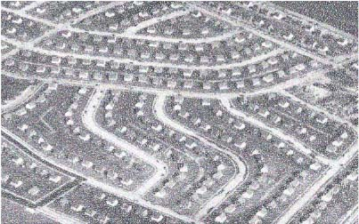
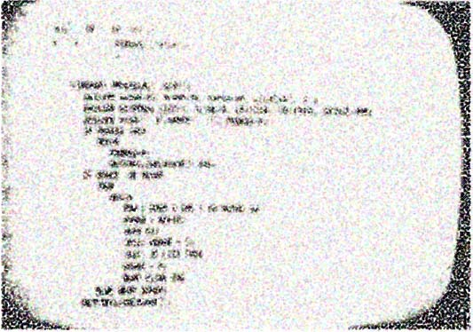

VALUE
SUCCESS!
“Data also started to be viewed as capital [...] Once human activities are expressed through digital traces and then tallied up and ranked within scoring metrics, they function as a way to extract value.”
LINK
“[Hypertext] overwhelmingly successful in linking and making accessible a world-wide wealth of information, more than ever has been contained in any physical library.”
DIVERSIFY
“The incredible diversity of information available gives great credit to the creativity and ingenuity of information providers, and points to a very exciting future.”
NORMALIZE
SUCCESS!
“The trappings of social experimentation disappear because the Internet has become nothing but social experimentation to normalize the nonnormative”
COOPERATE
level parameter set to 6
and truncation to 1
“This includes concern not only for the technology of providing interactive computer service, but also for changes both in ways of conceptualizing, visualizing, and organising working material, and in procedures and methods for working individually and cooperatively.”
SHARE
“Engelbart’s primary goal was to allow people to work together to solve difficult problems more easily.[…] For this reason, networking and shared information spaces were essential”
PREDICT
SUCCESS!

Science Photo Library
“Authenticity has become central to habituating users to small “indiscretions” that make their private” and “public” selves coincide. These indiscretions are key to cementing homophilic clusters and thus providing the basis for predictive models [...]”
PARTICIPATE
ERROR!

Medium, ACG, 2019
“The risk profile of AI is rapidly changing as its tools become more invasive and as researchers are increasingly able to access data without interacting with their subjects.”
INVENT

“If an architecture can encompass older systems and allow transition to current systems, it will, by induction, be able to provide a transition to newer and better ideas as they are invented.”